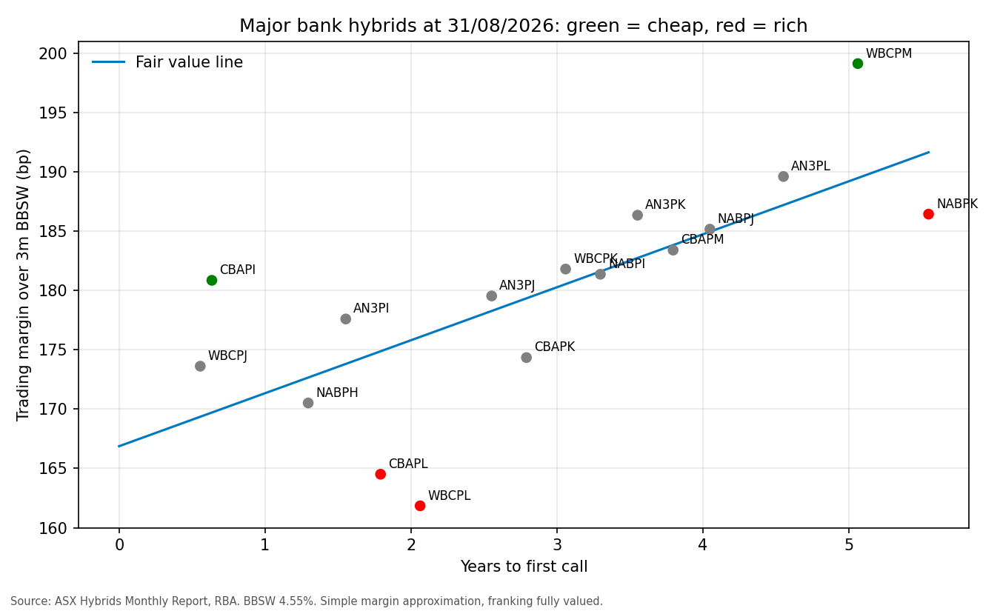

APRA's AT1 phase-out means no major bank hybrids will remain after 2032, yet the market is not pricing scarcity as risk: the curve rises only 4.5bp per year to call, from about 167bp over BBSW. Holders are paid almost nothing to extend. With the RBA lifting the cash rate to 4.60% on 30/09/2026, floating distributions are rising, which keeps buyers in the market and margins tight.

Green = cheap (5bp or more above the line). Red = rich (5bp or more below it).
| Hybrid | Bank | Price ($) | Years to call | Margin (bp) | No-franking margin (bp) | Residual (bp) | Signal |
|---|
WBCPK sits on the curve, so the switch moves from a rich line to a fairly priced one without changing issuer.
For each hybrid: the clean price is the ASX price less the distribution accrued since the last payment. The trading margin is the issue margin less the premium above $100 spread evenly over the years to first call. The no-franking margin removes the 30% of each distribution paid as franking credits. A straight line of margin against years to call gives fair value, and the residual from that line is the rich/cheap signal. Built in Python with pandas.
Sources: ASX Hybrids Monthly Report, August 2026 (terms and 31/08/2026 prices). RBA table F1 (3 month BBSW 4.55% on 31/08/2026; cash rate target). APRA, "Removing Additional Tier 1 capital from the prudential framework", 9 December 2024.